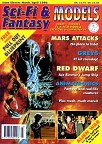

Sci-Fi & Fantasy Models issue 14 has landed in my docking bay! This issue includes more coverage of the modelling the Jupiter II from Lost in Space, scratchbuilding Star Wars figures, a Yoda review, building the Invaiders UFO kit, a Godzilla kit buildup, and more! Plus stuff on spaceships, toys, and movies. This magazine has a really nice mix of neat stuff!
The editorial team at Sci-Fi & Fantasy Models consists of Co-Publisher / Editor Mike Reccia and Co-Publisher / Art and Production Dave Openshaw (david@nextmill.demon.co.uk). The editors can be reached at:
The magazine is now published 7 times a year. For US subscriptions e-mail DkEmpire@aol.com for subscription and back issue availability information.
Sci-Fi & Fantasy Models issue 13 has hit the streets! This issue includes more coverage of the Space 1999 Alpha Ships, modelling the Jupiter II from Lost in Space, Gundam kits, Revell's Batman figure kit, AMT's Luke Skywalker, a "how-to" article on creating your own full sizeR2D2, and more! Plus stuff on spaceships, toys, and movies. I always enjoy this magazine, it's got a mix of neat stuff!
The editorial team at Sci-Fi & Fantasy Models consists of Co-Publisher / Editor Mike Reccia and Co-Publisher / Art and Production Dave Openshaw (david@nextmill.demon.co.uk). The editors can be reached at:
The magazine is now published 7 times a year. For US subscriptions e-mail DkEmpire@aol.com for subscription and back issue availability information.
Sci-Fi & Fantasy Models issue 12 has made it our way! This issue includes coverage of the Space 1999 Alpha Ships, a great article about Mike Hill's 1:1 scale Batman Bust, Mutant Artifacts from Bright Light Studios, a "how-to" article on creating The Penguin, kit reviews, and more! Plus stuff on spaceships, toys, and movies. This is a really fun magazine!
The editorial team at Sci-Fi & Fantasy Models consists of Co-Publisher / Editor Mike Reccia and Co-Publisher / Art and Production Dave Openshaw (david@nextmill.demon.co.uk). The editors can be reached at:
The magazine is now published 7 times a year. For US subscriptions e-mail DkEmpire@aol.com for subscription and back issue availability information.

Sci-Fi & Fantasy Models issue 11 has blasted it's way into my garage! This issue includes coverage of the Alien War attraction beneath London's Trocadero. Sounds like you should bring an extra pair of underwear on that trip! On the figure model kit front there are articles on Little Grey Men, Japanese Kits, Tiny Terrors, Odo, Robin The Boy Wonder, and Mars Attacks: No Place To Hide. There are also some great F/X articles such as Space Precinct's Zwellin, Red Dwarf, and The Character Shop. Plus stuff on spaceships, toys, and movies. I really enjoyed this magazine: there was a lot of variety - and I still got my garage kit fix!
The editorial team at Sci-Fi & Fantasy Models consists of Co-Publisher / Editor Mike Reccia and Co-Publisher / Art and Production Dave Openshaw (david@nextmill.demon.co.uk). The editors can be reached at:
The magazine is now published 7 times a year. For US subscriptions e-mail DkEmpire@aol.com for subscription and back issue availability information.
The Gremlins in the Garage webzine is a production of Firefly Design. If you have any questions or comments please get in touch.
Copyright © 1994-1997 Firefly Design.